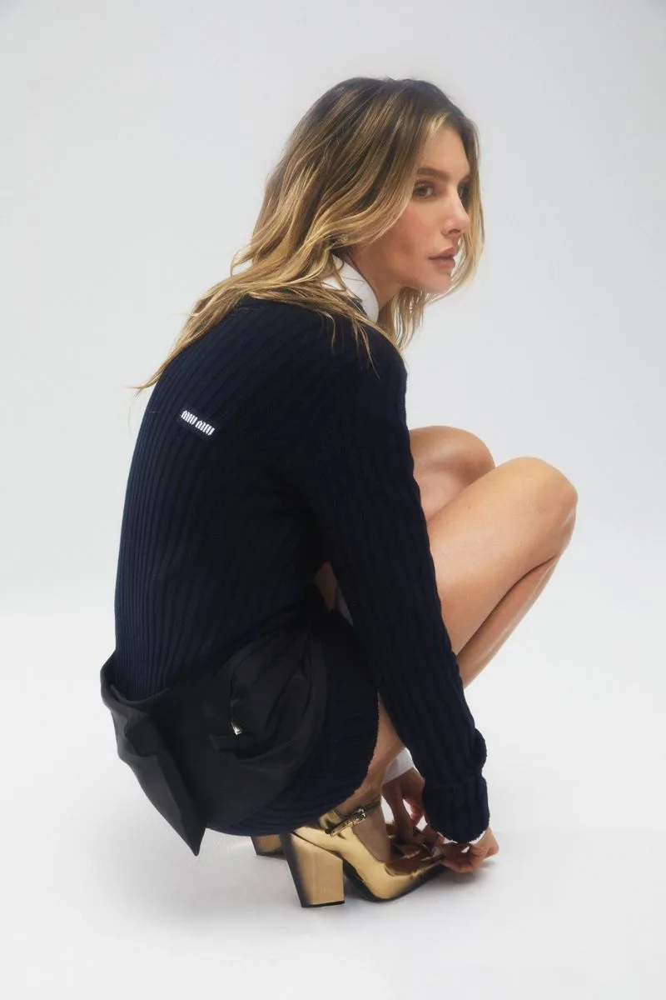

Styling — Portada — Nueva York, 2023
Valentina Ferrer
× Miu Miu
Nueva York, Mayo 2023
Marie Claire Argentina
Portada
La portada tenía que decir algo sobre volver: sofisticación sin nostalgia. Miu Miu, Nueva York, una silla y mucha luz.
La colección giraba alrededor de la sastrería redefinida: chaquetas de punto con terminaciones estructuradas, shorts en negro, camisas blancas que emergían como elemento de contraste.
Con Valentina el desafío siempre fue el mismo: tiene una presencia que llena el cuadro. El styling tenía que ser un soporte, no una competencia.

Una sola prenda de Miu Miu dice mucho. Cinco dicen demasiado. La edición fue la parte más difícil de esta producción: elegir qué sacar, no qué poner.
El resultado fue la portada de mayo 2023. Una de las más vendidas de ese año.
Créditos